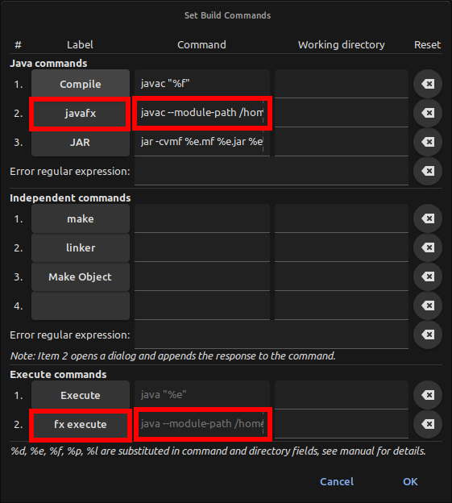
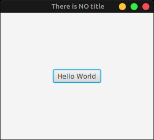

Enabling javafx in ubuntu
Javafx is a framework that allows the programmers to include graphical interface. Though java has other modules to offer the users graphical interface such as swing. But javafx is very flexible and allows the users to customize the program in a large range. Unfortunately javafx does not come with java anymore. It has to be included manually. Here we will show you how to download javafx and integrate it in the program.
Before doing anything, its important to keep the OS up-to-date. Open the terminal and execute:
sudo apt update && sudo apt upgrade
Selecting an IDE
There are many IDEs out there where Java programs can be compiled and executed. Some of the popular IDEs are netbeans, intellij IDEA, ecllipse etc. But they are heavy and somewhat bloated. Here for demonstration purpose we will use geany. It is a fast, interactive and lightweight IDE. To install geany in ubuntu, execute the below command:
sudo apt install geany
Geany comes with a bunch of default plugins. Besides extra other plugins can be installed together or individually. Here we will 'bracket completion' plugin. To install it, execute the command in terminal:
sudo apt install geany-plugin-autoclose
For more information, click here
With all these set up, we can move to the next step.
Installing Java
Intalling Java is very straight forward. We will demonstrate installing both versions.
Installing the default version
Execute this command in terminal:
sudo apt install default-jdk default-jdk-headless
With that done, make sure to check the version.
Installing the newer version (preferable)
Here we need to add a third-party repository to get the Oracle JDK. We are using the Linux Uprising one. But you can use any other trusted repository as well.
sudo add-apt-repository ppa:linuxuprising/java
Now update the packages.
sudo apt update
Now execute these commands:
sudo apt install oracle-java14-installer
sudo apt install oracle-java14-set-default
With that done, make sure to check the version.
Checking the java version
To know what version of java is being used, execute the following command:
java --version
Also excute:
javac --version
But if you have multiple versions of java installed, you can set the default one by executing this command:
update-alternatives --config java
Now a list of installed java packages will be shown. Choose your desired one.
You are not finished yet, change your javac version as well. Because the versions of java and javac should be same.
update-alternatives --config javac
For more information, click here
Now lets go the next stage.
Downloading Javafx
javafx framework is distributed by many websites. Here we will prefer to download the framework from gluonhq.com . To navigate to their javafx download section, click here
If you use the default version of java, you should choose the version of 11.0.2 . But if you install java 14 version then you should choose javafx version 14.0.1 . In both cases, choose "JavaFX Linux SDK".
Integration with IDE
Once downloaded, extract the archive and name folder "javafx" put them on your desired folder. I have put the javafx folder in my /.local/share directory.
Now open a java file with geany. Go to
Build -> Set Build Commands.
In the "Java commands" section, set the following,
| Label | Command | section |
|---|
| javafx | javac --module-path /home/{user-name}/.local/share/javafx/lib --add-modules=javafx.base,javafx.controls,javafx.fxml,javafx.graphics,javafx.media,javafx.swing,javafx.web,javafx.swt "%f" | Java commands |
| fx execute | java --module-path /home/{user-name}/.local/share/javafx/lib --add-modules=javafx.base,javafx.controls,javafx.fxml,javafx.graphics,javafx.media,javafx.swing,javafx.web,javafx.swt "%e" | Execute commands |

We are pretty much done. Lets test now.
Execution of program
Lets code first, write the following code and save it.
import javafx.application.Application;
import javafx.scene.Scene;
import javafx.scene.control.Button;
import javafx.scene.layout.StackPane;
import javafx.stage.Stage;
public class basic extends Application{
public static void main(String[] args){
launch(args);}
@Override
public void start(Stage primaryStage) throws Exception{
primaryStage.setTitle("There is NO title");
Button butn = new Button();
butn.setText("Hello World");
StackPane lay = new StackPane();
lay.getChildren().add(butn);
Scene scen = new Scene(lay, 300, 250);
primaryStage.setScene(scen);
primaryStage.show();}}
- Open it using geany.
- Under "Build" option, click the "javafx" button.
- Wait for the program being compiled.
- Under "Build" option, click the "fx execute" button.
- Now you will have the output. Enjoy.
